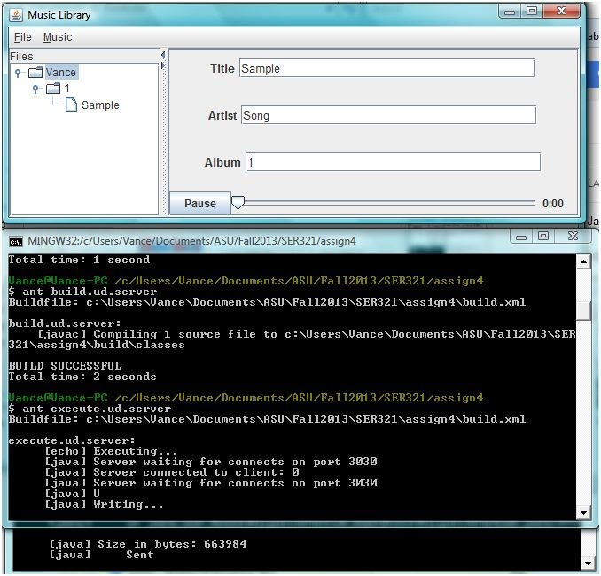

As part of a distributed computing course, I completed a class project aimed at demonstrating use of web-services to maintain a stateful central music library using tomcat and jax-ws. It uses a threaded socket-based upload/download server written in java to store the actual corresponding music files. One of the two clients that communicate with the remote object and the socket server is written in java and the other in objective-c. The 'distributed' aspect held pretty true for the project, as it utilizes remote method invocation and client-server interaction, but it does require tomcat to be running to parse the wsdl, build, and run.
Populating the song information fields and clicking 'Add' opens a dialog to choose a corresponding .wav file. Choosing one and submitting both sends a message to the web service to store a music description object in its hashtable and also opens a thread in the socket server to upload the .wav file to it.

The project is set up such that only one song file is maintained on the client at a time. This means that selecting a song and pressing play will first open a socket connection to the server and download it overwriting any previous song played, then play it.
The source code for all components of this project can be viewed here.